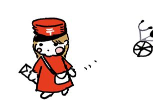

| tantanの子育て絵本ガイドeブック: 38の活用ヒントと30のおすすめ絵本 | |
| tantan | |
| Sonody systems (2014) | |
この本は、Webサイト『tantanの子育て絵本ガイド（http://ehon.sono-sys.net/ ）』にて掲載している内容を再編集・再構成して作られた、絵本ガイドブックの電子書籍版です。このサイトは、様々な形で長年絵本に携わる仕事を続け、また自身も子育てをリアルタイムに行う中で、いろんな人に絵本の読み聞かせの楽しさや絵本そのものの魅力をもっともっと知ってもらい、絵本を通して子育てを頑張っていくことを微力ながらも応援したいと思い、立ち上げたものです。
それでは何故に電子書籍化するのか、ということですが２点あります。１点目は、絵本に関する情報を容易に取り出せるようにすること。例えば、少しの家事の合間に、どうやったら我が子が絵本に集中してくれるかふと考えてみた時に、インターネットを開いて......とか、検索して......とかはなかなか面倒。電子書籍なら、さっと開いて目次を見て、良さそうだなって項目を素早く読めたりするのでは、と思います。それに、電子書籍であれば、インターネットができない場所でも活用できます。例えば、図書館で借りる絵本に悩んでしまった、そんな時にスマホにこのガイドブックが入っていれば、ささっと見て参考にすることができます。
２点目は、世のパパのため。子育てへの参加が積極的になってきた昨今とはいえ、絵本の読み聞かせ？絵本で子育て？と絵本に対してはまだまだ敷居が高いのではないでしょうか。そこで、その敷居を取っ払ってもらうために、電子書籍を電車の中ででも読んでもらいたいのです。「Webサイトを見て！」と言ってもなかなかしてくれないかもしれないけれど、本の形で読むのならビジネスマンは慣れています。またパパが独自で、絵本の勉強のために電子書籍を読むのもいいかもしれません。こっそり勉強しておけば、おすすめの新しい本も会社帰りに買ってこられるし、ママとの子育て会話もスムースにいくのでは、と考えています。
そんなことを願い、ガイドブックに仕上げました。内容にまだまだ物足りない部分はあるかもしれませんが、私たちもまた同じく絵本で子育ての勉強中でもありますので、ご容赦いただければ幸いです。
なお、本書の『活用ヒント』は、子どもの対象年齢順に記載することをあまり意識せずに載せています。その理由は、対象年齢に拘ると、どうしてもそこだけしか見えなくなってしまうからです。それぞれの子どもで、合うやり方、タイミングもまたそれぞれです。目次を見て、気になったところを開いてみる、というスタンスで読んでいただければ、嬉しい限りです。
2014年5月吉日
著者 tantan
編集 sonson
tantan......幼稚園教諭の経験をもち、その後も絵本に携わった仕事を続けています。絵本を広めるほうから、そして母親として絵本を直接我が子に読み聞かせるほうからと、多様な側面から絵本と向き合っています。絵本に関するいろんなことを知ってもらい、好きになってもらえるよう、日々頑張っています。
sonson......Webサイト『tantanの子育て絵本ガイド』の管理・運営をする人にして、本ガイドブックの編集と発行を担当。というか、tantanの夫。電子エンジニアとして働く傍ら、特に得意でもないサイト作成と電子書籍作成に取り組んでいます。とはいえ、あまりパソコンの前で作業していると怒られるので、気を付けないといけない。
monmon......tantanとsonsonの間に生まれたやんちゃな娘。日々振り回されていますが、絵本と一緒に過ごしながら、また日々成長しています。
「この本は何歳からが対象だから...」「この内容はうちの子には難しいかな？」「もっとためになるような絵本を...」なんて、色々考えるかもしれないけど。
まずは自分が好きな絵本を読んであげたらどうでしょう？
同じ世界を楽しむのです。
同じ時間とお話を共有するのです。
お話の内容とか理解とかは、とりあえずおいておく！ 子供の成長を絵本への反応から眺めてみましょう。そしてその反応を読み手も楽しんでみましょう。
親が心底楽しそうだったり、ビックリしていたり、喜んでいたりしたら、子供もそれを感じています。絵本からだけではなくて、絵本に接する親の表情からもたくさんのことを吸収していますよ。きっと。
そんな経験をたくさんすると、親だって成長しますよね。小さなことでも素直に驚いたり声をあげたりしていると、こんなに楽しいんだって。
少し擦れていた！？自分がピカピカになっていくような気がしないですか？
まず、読み手が楽しみましょ！
絵本は本棚に並べていますか？
我が家はいろんな関係で絵本などが大量にあるので、最初はカラーボックスとかに入れていたけど、今は某百均店より無料で（！）引き取った棚に絵本を詰め込んでいます。元は陳列棚なんで、背表紙が少し斜め上に向くように入ります。なので、すぐにタイトルがわかって便利♪
......だけど、やっぱり本棚に入っていると本の存在を忘れがち。
最近は絵本の表紙を見せて飾ることのできる絵本棚など素晴らしいものがあります。我が子monmonも自分で絵本を選べるぐらいに成長したら、いろいろな置き方ができるような絵本棚用意したいなぁ......。日曜大工でも何とかなります（誰かがやればね）。
でも、今も少しだけ棚の上に絵本をディスプレイして楽しんでいます♪ 本当に上手に絵本の楽しさをお話される先輩に教わった飾り方です。
『百均で売っている小さなイーゼルに絵本をのせる』 これだけ。
その日に子供と楽しんだ絵本、思い出ごと一緒に飾る。良いでしょ♪♪
あるいは、これから読みたい本を予め飾っておく。図書館から借りた絵本とかもこれなら読み忘れなくていい。それだけじゃなくて、飾られている絵本が替わると、これがまたインテリアをちょっと変えたみたいに部屋の雰囲気も違ってきて、別の意味で楽しい。
ちょっとしたことだけど、特別感たっぷりになりますよ～。
小さなイーゼルに載せる
子どもがまだ小さいと、絵本をみるというより、遊ぶ感じ。図書館で借りてきた絵本、高額の絵本に手をつけようものなら「ダメ、破らないで！！！」と叫んでしまいます。でも、触るのは絵本に興味があるから。触ってめくって何かを確認しているのです。
せっかく楽しい絵本タイムに怒ってしまうのはなんだかな。
そんな時、赤ちゃん向き絵本に多い、全てのページが固い紙で作られた丈夫な絵本！ 少々の力では破れないし、何回めくっても大丈夫♪ こちらの絵本でしっかり遊んでもらう。ペラペラ絵本は手の届かない読み方で楽しんでもらいます。
しかし、ちょっと目が離した時間に我が家のmonmonは、なめなめ～、かみかみ♪絵の部分がめくれて白い紙が見えていました。
良いよ良いよ、その本でシッカリお遊びください。
丈夫な絵本ありがとう！
硬そうな絵本
赤ちゃんと絵本を読む姿勢、別に決まりはないと思います。
赤ちゃんと読み手が心地よく読める体勢。一緒にごろんと横になって、抱っこしながら、大きくなったら膝に座らせてとか...なんでも。
我が家のmonmonの場合は、４～５か月ごろは絵本によく手を伸ばして引っ張ったりしていたから、私が両足を伸ばして座り、monmonを片足に引っかけるようにうつ伏せに寝かせ、反対の足を曲げて壁を作って読んでたっけ。ややこしい読み方。結局、疲れすぎない体勢で良いですよね。
１歳過ぎた今は動きまわって全然集中しないから（他に興味があるからなんだけど(-.-)）、食卓椅子に座らせて、付属のベルトをつけ絵本を読んでみました。
これ良い～。絵本をじっと見て、反応してた！ なんだかちょっと縛りつけているみたいだけど、本人楽しそうだから良いのじゃないかしら。
絵本をみることに慣れてきたら解放してあげよう♪
ちなみに絵本だけに座らせるのは何だか...なので、ご飯を食べる前に一冊読むことにしました！
読本中
絵本にあまり興味を示してなかった子が反応してくれた瞬間、こんな嬉しいことはないって感じます♪
我が子monmonは、もうちょっと小さい時には絵本みて声をだしたり、絵を指さしたりしていたのに、動けるようになったら「絵本なんて集中してられないわ！」って感じで始終動きまわってる。
ベルト大作戦をしてから、とりあえずは絵本みていたけど若干不服顔。
そんな時、『おてて たっち（作・絵： 武内祐）』を読みました。動物やお魚が仲間とタッチするお話。monmon、タッチができるようになってたので（幼稚園の先生をしていた友達が教え込んでくれた）お話の中の言葉「おててをタッチ！」に合わせて、一緒にタッチする。それが面白かったのか絵をじーっと見て、言葉を言う前に、タッチしようと手を上げた！しかも満面の笑顔でーーー！
「お母さん幸せー☆すごいぞぉ！」（若干親バカ）
絵本はこんな瞬間を体験させてくれる。
親バカでも良いのです。
たっち
赤ちゃんに絵本をみせても、その子が最後までじっくりとみているのは当然難しい。
わかっちゃいるけど、読んでいる途中でフラフラ～とどこかに行ってしまったり全然興味なし！の状態だと、読み手はイライラしちゃったりしてしまいます。
我がmonmonもまだハイハイができない頃は絵本をじーっと見ていたのに。動けるようになると色んなところに興味があって落ち着かない（>_<） まぁゆっくりと集中力はついてくるか、と諦め、私一人楽しみながら読み続けるとチラ見はするのだ。
この頃はまず１ページの絵をみるだけでＯＫ 。絵をみて楽しいと感じる気持ちを育てよう！ 表紙だけでも良いし、美しい絵のページだけでも良し♪ その積み重ねで絵本を読む集中力はついてきます。
ただ環境だけは整えてあげないとね。おもちゃが目に入ったりテレビとか、他の音が聞こえると、そっち気持ちがいっちゃいますから......。
力尽きました......
絵本の裏表紙は、作家さんの遊び心で書かれた絵があったり、お話の余韻を楽しめる絵、お話の続きの絵などがあったりして、実は結構楽しめちゃうのです。
裏表紙の絵を見ていると、作家さんの気持ちがよくわかります♪
私も幼稚園で読んでいた時にはお話を読んだ後に裏表紙を見せて、しばらく黙っていました。そうするとお話の世界に入っていた子どもたちは口々に色んなコメントくれるのですよ。時にはお話の続きを考えたり、絵のメッセージを受け取ってコメントしてくれたり......。
お家で読む時にも試してみてください。なかなか面白いですよ。でも決して無理強いしないでくださいね～。あくまで子どもがつぶやいたら、で。
裏表紙の楽しみ
子どもそれぞれ、「これ！」っていう旬のテーマというか、興味をひく内容があると思います。例えば「食べ物」「車」「動物」とか。タイミングよく、絵本のテーマを合わせると、食いつきが違いますねえ。
我が家のmonmonが、あまりに絵本に興味がうつりそうにないので、「自分の子どもに絵本を読むために、今までしっかり勉強してきたのに～(泣)」と嘆いていたところ、ふと気づきました。「あれ、絵本のテーマ、monmonの興味に合わせてたっけ？」と。私の趣味で選んでいたような......。
そういや「いないいないばあ」を最近一人でやって見せてくれていたなあと思い出し、フレーベル館のアンパンマンしかけ絵本『ばあ！』を読んでみた。そうしたら！
お～みてるみてる。
そうだ、monmonの興味の対象を見極めるという作業を怠っていた。
しばらくしてもう一度読んでみた。するとしかけをちらっと覗き、「ばっば」「ばー」（いないいないばーのバーの部分）とか言って喜んでいた。しかも、しかけをひらくたび、「きらりーん」と光る笑顔！！！
その子の興味にタイミングよく合わせた絵本のチョイス、大切。
特に小さい子達はね。
タイミングが合うとご機嫌
絵本読む時に、登場人物によって話し方をどの程度変えて良いのかな？と迷うことないでしょうか。私も子どもたちに読んでいた時には、悪者のセリフには声を低く、などと変えて読んでいましたけど。
絵本勉強会では「声色は激しく変えないで 」って言われますね。紙芝居だったら声色変えて臨場感たっぷりで演じられることが多いですが、絵本はちょっと違う。余りに激しく声色変えると、絵よりも話し手に注目しちゃいますから。
紙芝居は少し遠目で話し手も込みで絵が見られますからね。そういう点で違うのかな、と思います。
お話がある程度理解できるようになる年齢なら、あまり声を変えなくても、話しの流れがわかりますよね。小さな子たちには、少し声を変えると分かりやすいかなと思います。
絵本読みに絶対！はないので、状況によって変えてみてはいかがでしょうか。あくまで、絵への集中が途切れないくらいのほどほどで。なかには、「声色変えず、淡々と読むのが良し」っていう考え方もあります。
個人的にはある程度、絵本のお話を理解できる力が育ってきたら、静かに読む読み方も入れたいなと思うのですが、「絵本あそび」の時期は色々な読み方で楽しみたいです♪
え？誰？
図書館にはいろんな絵本が置いてあるので、使わない手はない。何せ家には置けない大型絵本もたくさんあったりするし。『はらぺこあおむし』の大型本なんか、自分が小さくなったみたいでとても楽しい。
さて、図書館の利点は無料で本が借りられるだけではなくて。こんな利点もあるんです。
我が家のmonmonは最後の成長ってのが顕著でした。保育園行くまでは、なかなか他の子供を見ないので......。保育園も、組の中では同年齢ばかり、上の子を見て成長というのがしにくい。
その点では図書館はとてもいいですよ～♪
昔話ってちょっとしんみりとした！？暗めなイメージありますか？ 昔話もいろいろな種類があって、大笑いするものから、感動ものまであり、なかなか面白い。
なんといっても昔から語り継がれてきたお話。昔は絵本ではなく口伝えでしょうか。はたまた絵巻物のようなところまで遡って、ずっと伝わるお話もあります。これが絵本の始まりと言えるでしょうね。
私は、昔話大好きです。日本昔ばなしの番組も大好きでした。復刻DVDも持っています（あの番組続けて欲しかった～）。
子どもって、実は昔話おもしろがるのですよ！ 絵が今と雰囲気が違うし、語り口調も独特だし、面白くはないのでは？？と思いませんか？ 私は、以前はそう思っていました。
たくさんの子どもたちの前で昔話を読んできましたが、きまって、シーンと静まった空気が流れるのですよ。そして最後には「あ～おもしろかった！」の感想。やはり昔から長い間、伝わるだけあって《お話パワー》がすごいのでしょう。迫力もありますし。
もちろん、わからない単語が出てくると「それ、何？」と聞いてくることもありますが、大体、話の流れから絵を見て、子どもなりに理解するようです。その言葉がわからないと、お話が進まなくなってくるような時は、説明すると良いと思います。
しかし、私が昔話を読むと、市原悦子さん風になる のですよね（日本昔ばなしの番組の声担当）。子どもの頃聞いていた、イントネーションや間の取り方が自然と記憶されているんでしょうね。
珍念和尚のワンス・アポン・ア・タイム
季節に合った絵本を読む。
そのあとに絵本で見た春のお花や秋の紅葉した木を探したり......なんとも素敵な時間を過ごせそうではないですか？ 絵本をみて「昨日、お空にこんな形の雲あったね」とか「赤トンボ見たみた～」と会話もきっと広がります。
「絵本をみながらの会話って何話してよいのか...」と思う方にも、季節に合った絵本なら今経験していることだから、何かしら話ができます。そして、子どもにも今、肌で感じている季節の絵本なので絵に流れる空気であるとか、様子をイメージしやすいです。
現実と絵本の絵を照らし合わせてみること、それ意外と重要かもしれません。子供の描く絵って何かシンボリックな典型的な絵になりがち。例えば花とか。それは本当の花を見ていないからかも。絵本の中で色とりどりの物が描かれているように、ホントの世界にも色とりどりの物があることを子供にも知ってもらえたらとっても嬉しいですね。
そして、絵から実際の体験をイメージできる力 は、子どもが成長してからの「文章を読む楽しさ♪」に繋がっていくのです。
学習のために絵本を読むわけではないけれど、絵本を楽しむ経験が多いほど、その力はついていくでしょうね☆
秋です
絵本を読むときは、やはり読み手も落ち着いて、子もリラックスしているときじゃないと、なかなか絵本タイム楽しめませんね～。
腹がへっては何とかと言いますが、子どもがお腹空いているときに絵本読みはオススメしません。ベルト大作戦（食事椅子のベルトで座らせて、いささか動きを封じて絵本を読ませるテクニック）を始めてから、食事前「マンマが冷めるまで絵本読もう！」なんて大人の都合で読んでいましたが、どうもうちのmonmonは落ち着きがないのですね。絵本をつかむは、「きゃー」とか言うわ。今から考えたら「絵本ちゃう！！マンマやぁー！」って言っていた訳なのですが。
私は食後に絵本を読んで、いつになく、にこやかなmonmonを見てからやっと「お腹すいてて集中できなかったのか！」と気づいたのです。小さな子どもと絵本の世界を楽しむ時は、読み手にも余裕があって、気もながーくしていないと正直読むのがシンドイです。イライラしていては読めません......。
そして子も、お腹が満たされ、ルンルン♪の時の方が「ま、絵本みてあげるわ！」って気持ちになるようです。（→注：子どもたちみんなが、こんな上から目線じゃありません！うちのmonmon様はこんな感じなんですよ...。ふぅ～(-.-)）
腹減った（私が）
絵本に対象年齢が書いてあるのもあれば、赤ちゃん絵本というくくりで、本屋さんに並んでいるのもある。確かに年齢によって理解力も違うから、赤ちゃんに急にストーリー性のある物語を読んでもピンとこないし、集中力も続かないし。
ある程度の生活経験がなければちょっと難しい絵本もある。
でも、５歳くらいの子が赤ちゃん向け、２、３歳向き絵本を読むのは大いにアリ だと思います。小さな子向きであっても素敵な作品があるし。ちょっと笑っちゃったり、ほっこりしたり。作家さんがこだわって作っているから、大人だって楽しめちゃうくらい。
「え？５歳に赤ちゃん絵本？？」と思ってしまうかもしれませんが、ぜひ読んでみてください。絵をじっくりみる力がついているぶん、色々なことに気づいたりしますよ。そして、言葉の響きやリズムもきっと楽しんでくれることかと思います。
お家に絵本があったら、昔読んだ絵本を開いてみてください。子どもちゃんの成長も一緒に感じられますよー♪
対象年齢なんですけど......興味なし？
絵本嫌いなのー！！って、つい思ってしまうくらいの我が子monmonの落ち着きのなさ。
ええ、今まで絵本に携わってきて、分かっているのよー。この状態は「嫌い」なのではなく、興味が他に移っている感じ。わかっちゃいるけど、「もう読まないよ！」って言ってしまいそう......。
しかし、待てよ。絵本を見せたときには、向こうの方から目を輝かせてやって来た、１ページ目ではブタに指差してた。「い～」ってイライラしていたら、小さな成長を見逃してしまうところだった。
そうそう、１ページだけでもいいのだ 。何かしらをみて終わりでいいの。
絵本からすっかり興味をなくして自分足を引っ張って遊んでいるmonmonの横で、とりあえず、最後まで絵本を読んだのでした。
まあ、こんな日もあります。毎日の積み重ね！ いつか「この本読んでー！」と絵本を持ってきてくれることを夢みて～～。
未来予想図は～
赤ちゃん絵本と呼ばれる絵本はハッキリした色づかいや太めの黒線で輪郭を書いた絵が多いです。小さな赤ちゃんは視力がまだ低いので、その方が見やすいですね。対象物も分かりやすく、絵に集中しやすいのでしょう。
ハッキリした色づかいでも、色の種類が多すぎるのは見にくいですね。大人がみて「スッキリ、シンプル、ハッキリ 」が赤ちゃんも見やすいでしょう。
我が家のmonmonも、やはりハッキリ色づかいの絵本が好き。逆に、淡い色づかいの絵本は反応薄い。私が読んでみたら最後の方は奪い取り、何をするのか、ちょっと自由にさせてみたら、絵本の上に乗った！！そして満足そうな笑顔...さすがに止めて「絵本はこうやって読むもの～」と教えましたが......。
パンチの強い絵本の方がmonmon好みらしいです。しかし、上に乗っても、ひっぱっても、固い紙でできた絵本（合紙絵本）は強いな～。
☆ハッキリ色づかい赤ちゃん向きオススメ絵本☆
『だっだぁー』
作・絵： ナムーラミチヨ
出版社： 主婦の友社
猫は踊る（本文とは関係ありません）
大型絵本は購入するとびっくりするくらい高価ですが、図書館にいくと貸し出しオッケーなところもあると思います。我が子monmonがいつも行く図書館には、子どものお部屋にたくさんの種類の大型絵本が置いてあって、自由に読めます。けっこう小さい頃から見せていました。
本当に楽しいですよ。いつも読んでいる絵本が、大きくなっているのですから！私はそれだけでも何だか興奮しちゃうんですけど。
絵が大きい！！！
『おおきなかぶ 』のかぶは本当に大きいし、『はらぺこあおむし 』の蛹のページは、すみません大きすぎて怖い。『ちびごりらのちびちび 』のちびちびは迫力あってmonmonも若干怯える！という感じで迫力満点、面白いのです（ぜひ実際にみて感じてください）。
基本、大型絵本は個人用というより、大勢で読むための絵本なのですが（遠くからみても絵がよくわかる）、もし機会があれば楽しんでみてください♪ 小さい、というか普通の大きさの絵本と見比べてみても面白いですよ～。
大型絵本の読み聞かせ体験記はまた別の機会に。
カブがでかいっ
よく絵本ガイドなどに《絵本の読み聞かせを毎日の習慣にしましょう》 と書いてありますが、「毎日しなければ！」とノルマ的に思ってしまった時点でちょっと負担に感じませんか？
私は忙しくて余裕がない時にはなかなか読めないですし、この時間に、という決まりもつくっていません。
「気が向いた時に読む 」が私の読み方。
我が子monmonがもう少し大きくなったら、寝る前などに読みたいなぁ。今は絵本と仲良くなる時期かな？と思い、元気に絵本で遊べる時間帯に読んでいます。前にも書いたけれど、お腹も満たされてリラックスしている時に......。
とにかく、読み手も絵本時間も楽しめるように、負担感のない読み方でよいと思います。その子、その子で違いますしね。ただ、それぞれのペースでとにかく続けていくことは大切かもしれませんね～。
続けていくと、お子ちゃんが大きくなった時に「これ一緒に読みたい！」「この絵本どんなお話？」と思う気持ちが育っていくことかと思います。
継続は力なり、ってことですね。継続と言えば、私も筋トレ柔軟体操、がんばって続けよ......。
ちょっと過密な絵本のタイムスケジュール
この間、大型絵本『おおきなかぶ』を親子60人くらいに向けて読んできました～。やはり大型絵本は大きくて絵も見やすいですから大勢でも、みんなで楽しめました♪
子どもたちは2～3歳ぐらい。このお話は繰り返しのパターンなので小さな子たちにも分かりやすいです。
文章のなかの「うんとこしょ、どっこいしょ 」の部分をみんなで声を合わせて言ってみました。最後はなかなか抜けないから何度も繰り返して言ったりと、オリジナルバージョンで。
本当に子どもたち可愛いですねー！ 必死になって言っていました。座っていた子も立ち上がって握りこぶし作って叫んでくれる☆☆☆
大勢で声を揃えると、また迫力があります。
最後！ おおきなかぶが抜けたところで保護者の皆様に訊いてみました。「このかぶで、どんな料理作りますか？」と。かぶのシチューに、かぶご飯、かぶの煮物に......いろいろ出ました。まあ前日、我が家のお父さんはこう答えてくれましたけど。
「あ、うん、千枚漬け」
大きい千枚漬けできそう。千枚どころじゃないかしら(^O^)
大型絵本読み聞かせライブ
読み聞かせって、大変！面倒！って思うこともあるかもしれません。確かに、私も、我が子monmonが明らかに興味がなさそうな絵本を「お母ちゃん、お読みなさい。ホラ」って持ってきたら、面倒。
しかし、読み聞かせをしていると、子どもが思いもしていない発見をしてたり「こんなことに興味があるんだ！」と気づいて驚くことがあります。そこから、絵本の読み方がさらに深まったり、「これほど興味を持っているなら今度はこのテーマのお話を探そう」と思ったりします。
子どもと一緒にゆったりと同じ世界を楽しめる経験は"絵本ならでは"です。もちろん映像でも実際の体験でも同じ世界を楽しめますが、静かに、じっくりと、そして何度も楽しめる点では絵本かなと。
そこまで楽しめるまでには、少し読み聞かせを続ける努力というか忍耐力というかが必要かもしれませんが......。monmonの場合は生後５ヶ月ぐらいから本格的に絵本を読み始めて、半年過ぎた頃でしょうか。最初は散々な感じでしたが少しずつ絵を指差したり、モニャモニャつぶやいたりと面白くなってきましたから。
絵本をみて反応が出てきた子どもの姿といったら本当に面白い。成長も見えて、なんだか子どもの心が少し分かったような。なかなか貴重な経験です。
この海の果てに興味は尽きない......
よく聞くお話に、お子さんが、ヒーロー、キャラクターの絵本にしか興味がなく、他の絵本は全く楽しんでくれない という悩み。
あるのですよね、そういう時期が。すごく格好良く見えるのでしょうね。でも、そういう時期って必ず卒業する日がくるから、無理に他の絵本を見せようとしないで、十分に楽しませてあげて欲しいですね。そこから学ぶ事もたくさんありますし。
他のお話絵本を読みたいなぁ、と思う時には、そのお気に入りヒーロー、キャラクター絵本を十分に楽しんだ後に、文章短めの絵本、他に興味がありそうな絵本を。例えば、電車、車、動物、食べ物......がテーマになった絵本などを見せて「こんな絵本もあるよ～」なんて言いながら読んでみるのはいかがでしょうか。
妖怪界のヒーロー、河童のがたろ
絵本の文章の単語や言葉のリズムに作家さんはとてもこだわっておられます。
言葉の選択だけでなく、絵と文字部分の量とのバランスや、文字の色......。とても時間をかけて作られているのですね。
読み聞かせ講習会などでは「絵本の文章は作家さんがこだわって選び抜かれた言葉＝作品の一部なので、子どもに分かりやすい言葉に変えたりせず、そのまま読むこと」と学ぶことが多いです。難しい言葉であっても絵を見ると分かったりすることも多いものです。
ある絵本作家さんは子どもに難しい言葉であっても、将来理解していく機会がやってくるわけだし。その時に「あ、あの言葉」と気づくのもまた面白い。敢えて難し目の言葉も入れているという意味の事をおっしゃっていました。
確かに。子どもは絵から多くの情報を得ていますからね。少々分からない言葉があっても物語は進んでいく。分からないだろうからと読み手が無理に説明する必要はないかと思います。それに、わからない言葉こそ、まさにそのシーンにはこの言葉！っていう独特の響きをもっていたりもするのです。
でも、状況はいろいろ。遊びながら読んだり、子どものほうから意外な声が出てきたり。上に書いたこともある程度頭に入れながら、柔軟に対応していったら良いのではないでしょうか。
じっくりと絵本が楽しめる年齢や状況になったら、絵本の文章通りに読んで、集中して絵本に入り込める機会を作ってあげると良いのでは、と思います。
難解語を放つ「アッチョンブリケ！」
よく、絵本紹介雑誌などに「読み手が好きな絵本を選んで☆」と書いてあったりしますが、やはり、子どものために描かれた絵本ですから、自分で「この絵本が好き！」と思える絵本がなかったり、ピンとくる絵本がなかったりもしますよね。
そんな時、選択の方法としては、絵本サイトで人気絵本を片っ端から読んでみるのもよし、読み手が「この色キレイ 」「この絵が好み 」という視点だけで選んでもよいと思います。
また図書館などで、お子さん本人に選ばせても良いです。もっとも小さい子だと、本当に読みたいのかよくわからない絵本を取ってきたりもしますけど。「絵ほとんどないけど？？」みたいな。
まあ、本人が選んだということで読んでみてもよいかもしれませんね。ドラッガーの『マネジメント』とかをもってこられると、少々困りますが。
とりあえずストーリーのことを頭の片隅に追いやって、作家さんそれぞれの、いろいろな絵を見るだけでも、なかなか面白いですよ～。
絵本の世界でまってます
いろいろな種類の絵本があるわけですが、中には「だいすき 」という言葉が繰り返し出てきて、読んでいるとニッコリできる絵本や、親子の愛情がひしひしと伝わってくるお話があったり......。
言霊ってありますよね（いささかスピリチュアルですか？？）。やはり、マイナスイメージな言葉を聞いているより、幸せになるような、ほっこりするような言葉を聞いている方がもちろん心地よいです。
元来、絵本にはそのような言葉が多いわけなのですが、子どもたちは、優しい言葉がいっぱい詰まった絵本を読むと気持ちが安定するのか、満ち足りた表情をするのです。
ちょっと子どもさんにイライラしてしまった時には、「だいすき」「しあわせ」の言葉にあふれる絵本をチョイスしてみるのも良いかもしれません。
なんだか気持ちがリセットできたりします。
返っていろいろなことに気づかされたり、親の方が癒されたり、ね。
ブリックワード：『だいすき』
絵本って、読む人によって、また違う世界ができあがるから面白い。
今日、我が子monmonがもっていた絵本『がたん ごとん がたん ごとん 』の汽車が走る音"がたんごとん、がたんごとん"をどう読むかっていう話を皆（夫婦と祖母）で話していました。
みんな、リズムも違うし、イントネーションというか音程も違う。ばぁばが「みんな違うと、monmon戸惑うよねー？」って。
いえいえ、みんな読み方が違うなら、一冊の絵本を何通りにも読むことができて、お得じゃないですか。monmonもいろいろな表現を知ることができるしね。
私は楽しい♪って思いましたよ。
絵本はいろいろな人の声で、表現で読んでほしいなぁ。子どもは何とも柔軟ですから、それぞれに合わせて楽しみますしね。男の人が読むと迫力が出て臨場感たっぷりになる絵本もありますよ。世のパパさんたち、ぜひ一緒に絵本タイムを楽しんで～！と伝えてまわりたいです。
それにしても、うちのばぁばは感覚的に絵本を捉えて、体の表現つきで読むものだから......。monmonは、ばぁばから学んだ不思議な動きをすぐに覚えて、動きながら絵本を楽しんでいます。子どもって衝撃！をうけた動きは、すぐに覚えるのね。
ばぁばの読み方は、言葉をイメージで受け止めて読み聞かせるから、文章通りでないこともあるんだけど......そんな読み方があっても、また面白そうですよ。
絵本読みは自由～！
いろいろな表現方法で楽しめるのだ、って改めて感じたのでした。
がたんごと......汽車じゃなくて馬車です、それ
絵本は基本的には絵本通りに読むことが大切なんですが、集中力三秒 な（注：うちの子は）乳児ちゃんには絵本通り読んでいたら、飽きちゃってスタコラさっさとどこかに行っちゃったりします(-_-;) また戻ってきたりもしますけれどね。
絵本通りに読むのは、また大きくなったらにして、小さい頃は遊んじゃいましょ♪
動物さんが出てきたら、文章に書いてなくても、「にゃにゃーん！（ねこ）」と返事したり、ゴリラが出てきたら「うっほ♪」と胸をたたいてみたり......。いちごが出てきたら、「いちご食べたねーこれこれ」「お母さん食べよ！パク！」と絵をつまんで食べたり、効果音つけたりとか......。
かなり想像力要ります？
いえいえ難しく考えず！思いつくままにやってみましょー。同じ絵本を読むことになっても「今回はどんな読み方しよう」と結構読み手も楽しめちゃうかも。私はそんな感じで、同じ絵本連続読みを乗りきっています。
読み手が何やら面白そうにしていたら、小さな子達は何やら注目しますね。
※じっくり読むことができるようになったら、文章通りで読んであげてくださいね。
ハイ、三秒で集中力切れました
乳児さんに絵本を読む時には、棒読みよりかは、ちょっと楽しいリズム、とでもいうのでしょうか、楽しく音楽のように読むと結構注目してくれるのですよね。
乳児さんに歌を唄うと、興味深げにじっと見てくれます。人間はリズムを刻むものには本能的に反応するのではないでしょうかね。
乳児さん向きの絵本にはリズミカルに読めるような、言葉の組み合わせの絵本が多いのです。リズム感ある読み方と言っても、なにも作曲して絵本を読んでみようというのではありません。言葉尻に「♪」がつくような読み方すると注目するように思います。
問いかけるように読むのもgoodですね。これは、今まで多くの乳児さんたちに絵本を読んできた経験からです。
まあ、何をしても興味がなさそうなのであれば、さっと読むのをやめるというのも良いかもしれません。さっとやめるけど、ご飯の後、おやつの後、眠る前......などと何度も出す！ そんな繰り返しをしていると、見慣れて興味持ってくれたりもします。これは、私自身の子育てからの経験。
ええ、小さな子達は同じ絵本を喜びます。見慣れた絵をみると「あ～あれぇ！」と分かり、展開も分かることが安心するのかもしれません。
うちのmonmonも自分で絵本を選ぶ時には新入り絵本より、何度も読みなれた、それこそ、５、６ヶ月から読んでいる絵本ばかりを「読んでー」と持ってきます。あ、おしゃべりはまだうまくできませんから、「あい！」と絵本を私に渡し、膝の上ににズリズリ乗ってきます。
ええ、何度も何度も(-.-)
もっとも、何度も読んでいる絵本を見ながらの方が言葉もたくさん出ていますからねぇ。
乳児さんに絵本を読むことは少しばかり、いえ結構忍耐力はいると思いますが、 チラッ！と子どもの成長を見ることができる瞬間が必ずありますので。
続けてみると、なかなか面白いものですよ。
日々、怪獣さんに絵本読み聞かせ
忍者って子どもたちにとても人気がありますねー。憧れがあるのかな。忍たま乱太郎のアニメ番組で忍者を知った子どもたちも多いことでしょう。あ、ナルトも忍者ですか。
私たちが子どもの頃は「忍者ハットリくん」という番組も放映されていましたね。「にんにん」とよく言っていたものです。
日本古来からのヒーロー忍者。忍者がテーマとなっている絵本をあるサイトで検索してみましたら、28冊あがってきました。作家さん（文担当）の男女比はどれくらいかとワクワクしながら見ていましたら、28冊中21冊が男性の作家さんでした。予想通り！
忍者は忍者でも、折り紙（！）や猫が忍者になっていたり......と展開されたお話もあり、なかなか面白そうです。やっぱり日本人ですから、日本の昔からのヒーローが活躍する絵本たくさん出版してほしいなと思います。昔話とはまた違った雰囲気ですよね。
なので、今の子どもたちが忍者を知ってくれているのは嬉しいです♪
ちなみに、私は夫婦で甲賀の忍術村に行ったのですが、忍者の資料や実際に使っていた手裏剣なども見ることができて、とても感動しました。手裏剣体験や（重くて全然刺さらないです）、忍者屋敷の見学などもあり、まるで忍者になった気分でした。忍者コスチュームで修行体験もありましたが、それはまたどこかで。
忍者がテーマの絵本を読む前後に忍者村に行く、というのも楽しそう。
画面の忍者 桃影
子どもたち向けの絵本には動物が洋服着ていたり、椅子に座ってお食事していたり、お話していたりしますね。今まで、私はそれほど気にしていなかったのですが、「なぜ、擬人化された動物が出てくる絵本が多いのか？」と問われて、考えてみました。
まず動物が登場する点については子どもたちに親しみやすい対象だからですよね（子どもの身近に登場する機会が多いから、そう思い込んでいるのかもしれませんが......）。人間がたくさん出てくるお話よりも、形、色が違うから識別しやすいし、個性の差が出しやすい。
つまり分かりやすい。
擬人化されているのは、自分たちの生活に近い内容の方が、子どもたちにとってイメージしやすい世界だから。簡単にいうとそんなところでしょうか？
でも、本当の動物の姿を知っていくにつれてお話の世界はファンタジーなんだと気づいてくるはずなのですがね。
私が保育現場にいた時に「先生、犬は服を着ていないし、喋らない！」と言う子はいなかったことを思うと、実はそこまで違和感は感じていないのではないか。
あるいは、あまりに小さい頃から絵本や教育番組などで擬人化された動物を見てきているため、それほど気にならないのか。または、お話の世界と現実との違いを自然に受け入れる柔軟性があるのか。
何せ子どもは適応能力が優れていますからね。
教育に携わる人のなかには「動物が擬人化された絵本は見せたくない！！」とおっしゃる方もいますが、現実は擬人化された動物だらけなわけで。
子どもたちは柔らかい頭で、いろいろな世界を楽しめるものすごい力を持っているので、本来の動物の姿が描かれた絵本や図鑑、そして実物！と見る機会があるともっと良いかと思いますよ。
要は、偏らずに様々なものを見せてあげて～、というところでしょうか。
あしなが絵本おじさんのジョニー
絵本を一緒に読んでいると、子どもの興味、関心がよくわかる。子どもの心にちょっと近づいた気持ちになります♪
絵本を読み進めていくと"わくわくする気持ち "や"悲しい気持ち "などなど同じペースで一緒に感じる経験ができます。絵本を読んでいると子どもの気持ちがよ～く分かり、伝わってきますよ☆
読み聞かせは、子どもとじっくり向き合える静かな時間を与えてくれます。忙しく日々が流れていく育児の中で少しペースダウンして、ゆっくり子どもの成長や様子を見つめ、子どもと向き合うことのできる時間。
案外、大人が癒されますねえ♪
途切れた線／途切れぬ絆
こんな話を聞いたことがあります。
桃をむいて食べようとしていたお母さん。その横で子どもが「あ、お母さん、桃太郎の桃ってこれなの！！ 」と目を輝かせて言ったとか。
こんな感じで、絵本から先に知ること、物もたくさんありますよね。できれば先に桃を知っているとイメージが膨らんでお話の面白さが増すとは思います。
でも、例えば上の例のように絵本を読んだ後、桃を食べる機会がきたのなら「桃太郎の桃ってこれだよ！ここから生まれてきたのね～」と伝えてから食べると、また楽しめるわけで。
特にどっちが先でないといけないというわけではないですが、後でも先でも実際に体験する機会ができたら、絵本のお話を関連させて楽しんでみてはいかがでしょうか。
私が保育の場で絵本を楽しむ時には、お話に関連する写真を見せたり、実物を見せたり楽しんでから読んだりもします。保育では"導入"って言います。
この時間があると子どもたちの絵本に対する反応がすごく良くなって、ワイワイ盛り上がるのですね。
家庭でも、例えば「おおきなかぶ」を読む前に小さなかぶを見せてみるとか、動物が出てくる物語だと図鑑や、写真を見せるとか、最初の例（桃太郎）だと、桃を見せて、食べてから読むとか......。そんな時間があっても面白そう。もちろん、機会がありましたらね。
後から体験できる時には、ぜひ、絵本のお話を思い出して想像してみましょう♪ 今、絵本に出てくるお菓子のレシピ集などもあります。私も本を買って作ってみます！（体験談はまたいつか......）
子どもたちの想像力を豊かにするためにも、いろいろな読み方を試してみたいものです。
たまには冒険に出かけるのだ
絵本はある程度文字が読めるようになってきたら、子ども1人でも読むことはできます。
「1人で読めるようになった！あ～もう読まなくてもいいや。楽♪」って思うかもしれません。確かに1人で読む時間も大切です。でも、絵本はできれば子どもが大きくなっても読み聞かせの形で一緒に読んで欲しいところもあるのです。
字を読むことができたばかりの子どもが1人で読むと、"一生懸命文字を追って→絵を見る"という流れになり、お話の内容の理解度も変化が生じます。そして、絵からのイメージが文字を読む時間、中断されてしまいます。
絵本の第一義は絵を読むもの。読み聞かせの声を聞きながら、絵をじっくりとみると、最後まで物語のイメージを膨らませながら楽しむことができます。より充実した絵本の世界が楽しめますね♪
それだけでなく、大好きな人の声で読んでもらう時間の心地よさ。心も落ち着き、のびのびと絵本の世界に入っていけるのではないでしょうか☆
ぜひ絵本は一緒に"読み聞かせ"を楽しんでくださいね！
パンダな読み聞かせ
絵本は結構な価格しますからね、買うときにもったいないかな？って思います？
絵本を購入する利点を考えたいと思います。
まず、買うとなると吟味するので「子どもに気に入ってもらえる内容かしら？？」「ずっと楽しめるかな？」などと真剣に考えることができる！
図書館の絵本だと、破ったらダメ、汚したら、なめたらだめ～、などと必要以上にピリピリしてしまいます。購入した絵本でも同じ事なのですが、公共の絵本と自分の絵本では気分が違いますよね。
そして、何よりもいつも身近に絵本を置いておけるので、「あ、読みたい！」と子どもが思った時にすぐに手に取ることができる。ずーっと残しておける所が利点ではないでしょうか♪
今は便利で、絵本ナビのサイトでは絵本試し読みができたりするのですよね。
先にそれを利用して、後で本屋さんに行くのも良いでしょう。
ただ、必ず実際の絵本を見てから決定すると良いかと思います。
なぜなら、デジタルでは表現しきれない絵本の情緒というのでしょうか、紙の質感であったり、絵本の形、大きさから受けるイメージ、色合いの出方などが実際と少し違うかな？と思うからです。
絵本のパワー、感覚を知るには本屋さんで絵本を探すのが一番。
絵本にカバーがかかっている時には、ぜひ店員さんに声をかけてくださいね。（→本屋さんの透明ビニールカバーは、外してもらえるよ ）
町の本屋さん♪
絵本って、結構高価ですよね。
大人が「これ読んであげたいな♪」と思って、買っても、子どもは興味なし......ということもあるかもしれません。正直、もったいないなと思ってしまうでしょう。
他にも例えば、もらった絵本があるけど......あまり興味なさそうだとか、絵本ガイドで人気だったから買ってみたけど、反応薄い！！みたいなことも。
そういう話はよく聞きます。ちょっとガッカリですよね。
でも大丈夫！ その時のお子さんにフィットしていなかっただけで、「成長したら、楽しむようになった」「しばらく経って大好きな絵本になった」ということがよくよくあるのです。
たとえ赤ちゃん絵本でも大丈夫。「3歳になってからじっくりみるようになった」なんてこともあるのです。赤ちゃん対象の絵本であっても、読み方は様々。大きくなって読み方が深まることもあります。
ガッカリして、誰かにあげてしまったり、すぐにオークションで売ったりしないでくださいね。
少しお邪魔でも、お家の本棚で熟成させてください♪ 時々、ひっぱり出して、子どもと味見！みたいな感じで、たまに読んでみて、"しっくりときた時 "に活躍してもらいましょう。
子どもたちの個性は無限。ピタリと心に寄り添う絵本は対象年齢も関係なく、大人の判断も関係ないのですね。
その時々、それぞれの子どものアンテナで大好きな絵本を見つけます☆
嵐のように去っていく、興味のカタマリ
幼児さん、つまり３歳以降くらいからの絵本の楽しみ方、注目のさせ方ですが。
絵本の最後まである程度、集中できるぐらいの文章量の絵本なら、いろいろ読み手が言葉を付け加えたりせずに（文章を読むだけ）、絵本の世界にじっくり入り込める読み方もだんだん増やしていくと良いのでは？と思います。
乳児のころは、読み手も一緒に絵本で思いっきり遊んで、絵本大好きに！の機会がとても大切ですが、幼児になると、ある程度絵本のお話の流れ、イメージがつかめるようになりますからね。そっと絵本の世界に入れてあげる。
その時に大切なのが、読み手が主張しすぎないコト 。オーバーアクションな派手すぎる抑揚をつけて読むと絵に集中しにくくなるので、自然な感じで読むと良いです。
いろいろな事に興味津々でアンテナを張り巡らせている幼児期。
以前も書いていますが、絵本に関係する実物を準備したり、図鑑・科学絵本、関連する絵本を合わせて読んだりすると、とても盛り上がりますね。
絵本に出てきた内容を実体験すると（例えばカレーがテーマの絵本ならカレー作り！とか）読んだ絵本の理解がさらに深まるでしょうね♪
なんだかんだで実体験
幼児になると絵本の隅々の絵まで、じっくりと見てますからねぇ。大人が「こんなのに気づいてたの！！」って驚くほどの見方をしていることがよくあります。読み手が読んでいる間、絵をじーっと見ている訳ですからね。
どの年齢でも同じなのですが、読み手が文章を読んだからってどうかすぐにページをめくらないでくださーい 。子どもの様子をみて「満足そう。よし！」って確認してから、めくるぐらいが良いでしょうね。
そして、そして、表紙や、裏表紙、見返し部分の絵もゆっくり楽しんでくださいませ。
それから、よく感想は聞くなって言われることが多いかもしれません。
「面白かった？どこが？」「誰が好き？」などと根掘り葉掘り聞くのは、楽しかったお話の余韻を台無しにしてしまいそうですが......。
読んだ後の自然な会話は良いのではないでしょうか？？
少なくとも私はそう思います。子どもたちは信頼している人と絵本を読んでいると、いろいろな言葉、つぶやきが出てくるでしょう。
お話の途中で会話しても良し、絵本を全て読んでからページをめくり返して会話しても良し！ 会話が軽く、できるようになっている幼児ですから、絵本を通して、いっぱいコミュニケーションを取って楽しんでいただきたいな♪と思います。
ゆっくりやりますよ。
某通信教材のチラシに、絵本は1日に10冊以上は読みましょうと書かれていたと聞きました。ある芸能人パパも1日10冊読んでいると言ってたな。もちろん、たくさん読めると良いですよね。
しかし、10冊！とノルマ的にしてしまうと、しんどくありません？？
「何冊読まなきゃ」はしんどいけど、いっぱい楽しんでたら結果的に10冊になった！は、なかなか満足感あるのでは？
私は量より質で良いんじゃないかと考えます。
毎日10冊よ！と淡々と読みこなしていくよりは、いっぱい触れあって、なんやかんやと言いながら、ワイワイ楽しむ3冊が子どもの発達に良いんじゃないかって。
絵本の読み聞かせは子どもとのふれあい、コミュニケーションの時間だとも思うので、「毎日絶対何冊読む」というよりは子どもの様子をみながら合わせるで良いんじゃないかな、という気持ちになりました。
我が子monmonもたまに、読んで～と言い続ける時には結果的に10冊以上になってるときもありますが「あ、最近一緒に読んでいないわ！」とさぼっている時もありますし。
あ、ノルマがあると頑張れる方もいますね。とにかくルールに縛られることはないと思います！
10冊を目指したりしますと、家にある絵本の数も限られているわけだし同じ絵本を何度も読むことになるかもしれません。読み手は「しんどーい！」「飽きた」と億劫になるとは思いますよ。
でも子どもは違うのですよね。毎回新鮮な気持ちで読めちゃう。何度も読むことで新しい発見があり、さらに読み方が深まっている様なのですよね～。
私の記憶をたどってみても大好きな絵本「からすのパンやさん」は毎日でも読みたかった。お話が分かっているので「次はああくるよね」と感じられる安心感もありました。
そういうわけで、1日10冊なれば良いと思いますし、どうぞ、同じ絵本を何度でも楽しんで欲しいです☆
絵本読みにルールはありません、ご自由に～！！
全然しんどくないです
どの絵本を選んで良いかわからない方のために、絵本のお届けシステムというものがあります。
郵便局によく冊子が置いてある、童話館ぶっくくらぶ 、クレヨンハウスのブッククラブ などがありますね。年齢ごとのおすすめ絵本を月に１回基本一冊ないし二冊を自宅に届けてくれるのです。我が子に！お孫さんに祖父母が贈るというケースもあるようですね。
絵本の内容は童話館は文学的に優れた作品、昔からの絵本が多い感じでした。クレヨンハウスの方は最近登場した絵本も昔からの絵本もバランスよく入っている感じです。新刊セットや英語絵本セットもありましたね。
このようなシステムを利用するのも"良い絵本、素晴らしい作品"に出会うきっかけになります。絵本の専門家が選ぶのでそうそうハズレはないでしょう！
ただ、本屋さんや、図書館でたまたま出会って感動☆という絵本も愛着がわきますからね。ご自分で探すというアクションもぜひしていただきたいです♪ 人との出会いと同じで、素敵な絵本に出会うということもあります。
「良い絵本、子どもに読んであげたいな～」というアンテナを立てていると、いろんな出会いがやってくることでしょう(*^^)v

お届けものですぅ
作・絵： きむら ゆういち
出版社： 偕成社
この絵本、赤ちゃん向けにはほんと読みやすいね。絵がはっきりしていて見やすいし、大きいからインパクト大なのです。
いないいないばあにうってつけのしかけ。そのまま読んでも面白いはずなんだけど、monmonは全く興味持たず......。そこで、しかけを高速で！動かしながら、「ないないばぁ・ないないばぁ・ないないばぁ・ないないばぁ・・・」と叫んでいると、ちらっとこちらを見て笑い出した。「やったー！！」絵本見てくれた。
そこからは最後まで楽しんでくれたのでした。
ふぅ～絵本を見てもらうために、必死で考えるとアイデアがわいてくるものだ。
作・絵： ルース・ボーンスタイン
訳： 岩田 みみ
出版社： ほるぷ出版
この絵本、monmonが生まれる前はそれほど魅力を感じなかったんだけど、子育てしてこの絵本にながれる愛情がひしひしと伝わってきました。
文章のなかに「だいすきでした」という言葉がたくさん出てくるのだけど、この言葉が出るたびにmonmonをぎゅっと抱きしめながら読んでいると、にやりとまんざらでもない笑顔で喜んでいた。「だいすき」という言葉が自分に向けられているようにも伝わるんだろうな。
こんな絵本いいね。
そして、いろいろ動物が出てくるんだけど、結構迫力がある。monmonもページをめくるたび目を大きく見開いていた。特に蛇は私もヒヤリとしました。だって怖いよ普通に。
ちびちびが大きくなった様子もそれはそれは迫力がある。ちびちびが一面に描かれているページを少し離し、「うっほ、うっほ、うっほ！！」と鳴き声をあげながら、顔の近くまで近づけると、「けけっ」と笑っていました。
この反応良いね。読んでいる方も楽しくなる。
それにしてもゴリラって５歳であんなに大きくなるんだね。どうして５歳かって？ それは誕生日を祝うシーン、ケーキにろうそくが五本だもの。
作・絵： きむら ゆういち
出版社： 偕成社
いつものメンバーがお返事をする仕掛け絵本。
ピイちゃんは「ピィピィのピー！」仕掛けをめくる前に「ピイちゃ～ん！！」ともう一度呼んでからめくると楽しいね。もうちょっと大きな子だったらお母さんと声をそろえて呼んでみるのが楽しそう。
仕掛けをめくった後は、それぞれのお返事を「♪」をつけた感じで読んでいくととてもよろこんでいました。
うちのmonmonのお気に入りはかいじゅうさん。仕掛けを動かして同じお返事を何度も繰り返しても面白い。最後に出てくるホットケーキはとても美味しそうで、つまんで一緒に食べました！
作・絵： 田島 征三
出版社： 福音館書店
いえ、これ、単に私が好きな本なんです。まず絵が怖い。それに加え、喋る大福という大胆さがまた怖い。そして、モチが増えます。増えて増えて増えます。「これはドラえもんの秘密道具『バイバイン』を彷彿とさせる。かなり怖い」（sonson談。ウィキペディア参照 ）
お終いがまた物悲しい。そんなに怖い話なのに、何故か印象に残る。
暗い色調のせいかもしれない。
土佐弁が新鮮なせいかもしれない。
子供にとって、今はわからないかもしれないけど、いろんなことを感性に訴えかけるという点でおすすめです。
作・絵： 五味 太郎
出版社： 福音館書店
この絵本、ゲーム感覚できんぎょちゃんを探せるから面白い。小さいころはお母さんと一緒に探す、ものごとちょっと分かってきたころには自分で探す、長く使えそうな絵本なので買ってみた。色彩は五味太郎さん独特の暗めな感じで、色彩センスの突飛さとか、ごちゃごちゃしてそうだけど、色々登場して面白い。指で回すダイヤル式黒電話もうないね。
我が家のmonmonはこの絵本持ちやすいのかずっと持って遊んでいるけど......。「読もうか」と開けると喜ぶ。今日の読みかたは、「金魚ちゃんどこかな？？」と一緒に指で探しながら、見つけたところで「あ！！！」とけっこう大きな声で知らせる。
最初は、ものすごくびっくりしていたけど、中盤から「あ！！！」というごとに「きゃははは」と笑い出す。最後のページでやっと一緒に「あ」と言った。やっと気づいたか。
結構色々な読み方ができる。
作： 三浦 太郎
出版社： 童心社
赤ちゃんサイズでしかも、色がはっきりしているから、読みやすい絵本。ポケットの中に動物がかくれんぼ。「ポケットのなかには...」ポケットから少し頭をだしている動物たち。
「誰がかくれているかな～？黄色いね、小さいね～」なんていいながら次のページをめくる。「ひよこさんだったね、ぴよぴよ～♪ぴよぴよ～♪」と適当なメロディーをつけながら見ていきました。まだまだ絵本に飽きっぽいmonmonだけど、最後までよくみていました。
デザイン性が良いです。動物に集中しやすいのかな。
最後裏表紙には一つのポケット、そして表紙には動物たちが入ったポケット。裏表紙をみせて「いないいない～」そして裏返し、表紙をみせて「ばあ！」なんていう楽しい遊びもできちゃう。
作・絵：三浦 太郎
出版社：こぐま社
活用ヒントでもあるのですが、おすすめ絵本として紹介します。
この絵本、我が子monmonが6ヶ月くらいの時から一緒に読んでいたけど、あまりピンときてない様子でした。絵がとても見やすいからよくみてましたけど。
それが～～やっと楽しめるようになったのですよっ！絵本にはピタッとくる時期があるのですね。諦めずに読み続けてよかった(^o^)
このお話は離れていた動物たちが「くっついた」の言葉で、ぴったりとくっつく可愛らしいお話。繰り返しの内容で最後には、お母さん、お父さんともくっつきます。その「くっついた」に合わせて、ほっぺをくっつけたり、動物たちと同じ場所（鼻や手、おしり）をくっつけたりして遊んでみました。monmonはやっと意味がわかったらしく、喜ぶ、よろこぶ！
キャッキャ言いながら触れ合い遊びも楽しめちゃいます！今度sonsonがいるときに、3人でお顔くっつけて鏡で見てみよう（その後、やってみたが、ヒゲ面チクチクは今一つらしい）。
作・絵： 平山 和子
出版社： 福音館書店
くだものの本はたくさんあるけれど、くだものが本当に瑞々しく描かれた絵本。おいしそう......。大人が見ても楽しい。さらっと読んでしまうとすぐ終わっちゃうので、一緒に遊びながら読みたい。monmonはまだリンゴとバナナぐらいしか食べたことないけど、絵本の果物から食べるとしよう。
「さあ どうぞ」ととても丁寧な言葉遣い。絵本からも学べますね。「さあ どうぞ」と言いながら、もぐもぐたべるマネ。私が食べた後、monmonに「エアーくだもの」を渡してみる......。あまりわかっていなさそう。じっと私の手を見つめている。
作： マイク・サーラー
絵： ジェリー・ジョイナー
訳： きしだ えりこ
出版社： ほるぷ出版
こちらの絵本は「あぁ絵本って色々な世界を描けちゃうな」、そして「海外の作家さんって想像が柔軟」といつも感じる絵本なのです。
ゴムがこんなに伸びたら？ 電車に乗って、違う国に行ってもまだ伸びて、ロケットに乗って！！この絵本、読み聞かせすると子どもたちからは「え～うそ～？」という反応。でもゴムが伸びるイメージは頭にあるからフィクションとわかっていても楽しみます！
最後はなんとまぁ、こんな結末！！！
なるほど、と納得しつつ何とも気持ちも爽やかに終わることのできるお話です。
作・絵： かこ さとし
出版社： 偕成社
この絵本は食いしんぽうな私が昔、大好きだった絵本です。
からすの夫婦に赤ちゃんからすが産まれて......からす一家で色々な種類のパンを作り、パン屋さんは大盛況！ 文章量も結構多いけど、３歳くらいから母に読んでもらって、飽きずに繰り返しくりかえし読んでいました。
何といっても、とてもユニークなパンがたくさん登場する場面が大好きで、このページを毎回楽しみに読んでもらっていた記憶があります。今でもパン屋さんに入るとワクワクした気持ちになるのは、小さい頃に楽しんだ記憶が脳のどこかにインプットされているからだろうなと思っています。
※からすのパンやさんは40年ぶりにつづきのおはなしが発刊されています。『からすのおかしやさん』『からすのやおやさん』『からすのてんぷらやさん』『からすのそばやさん』。赤ちゃんからすのそれぞれのお店のおはなしなので、本当に"つづき"です。からすのパンやさんが気に入ったら、ぜひこちらも見てみてください。
作・絵： わかやま けん
出版社： 童心社
この方の絵本、絵がはっきりしていて赤ちゃんでも見やすい。なんとも温かい絵です。
なんといっても興味を持ちやすい動物がたくさん出てくるし。
うちのmonmonはまだ大して動物を見たことがないから、あんまりよくわかってないけど、食べることに興味があるから、たまにじっと見ていた。
動物さんたちが食べている音、色々な音が出てくるので、その言葉のところでmonmonの頭を「もぐもぐ」「ぱりぱり」「かりかり」なんて言いながら頭を手でぱくぱくしてあげると、「きゃはは」と喜んでおりました。
指導： いろいろな方
絵： いろいろな方
出版社： フレーベル館
この絵本は科学絵本と呼ばれる種類の絵本。
保育園や幼稚園で月刊の絵本として販売している絵本だけど、本屋さんでも購入できます（店頭になければ、注文することができます）。また、フレーベル館のオンラインショップ「つばめのおうち」でも購入することができます。
身近な生き物、植物などを写真と本当に！リアルなイラストで分かりやすく伝えてくれる。図鑑とはまた違って、読みやすいし、大人でも知らないような事まで載っていてついついじっくりみてしまいます。子どもに読んでいた時も、すごく好評でした！
私はこの絵本が大好きなので、古本屋で見つけたら買ったり、「つばめのおうち」を利用して好きなテーマの絵本を買っています♪
我が家のmonmonも自然科学が好きな子に育ってほしいな。一緒に読める日を楽しみに......。
作・絵： ジョン・バーニンガム
訳： 光吉 夏弥
出版社： ほるぷ出版
こちらは、海外の作品。子どもうけする絵かどうかはさておいて、私が好きな絵です。センスがとてもよいですね。お話も優しい空気が流れて、シンプルで。お気に入りの一冊です。
ガンピーさんは舟を漕ぎます、次々に動物たちが舟に乗せて！とやってきます。ガンピーさんは「仲良く、迷惑かけずに乗るならどうぞ」と。でも、動物たちは約束を忘れて暴れだしちゃうのです......。
その後のガンピーさんの対応が実によいのですよね。静かにうけとめて。読んでいる方は「あちゃっ」とドキドキするのですが。
子育てにもこれくらいの余裕というか器の大きさが必要かなと思います。親になってみて感じます。普段monmonがイタズラすると、キーってなって、すぐに「こらー！」って言いますもの。
大人が読んでも、ゆったりと、自分の心を振り返ることのできる絵本だな、と思います。
作： 谷川 俊太郎
絵： 元永 定正
1歳2か月にして、我が子monmonは、絵本に興味が出てきた様子。前みたいに、上に乗ったり、めくるだけめくって上機嫌だったり......みたいなことは減ってきて、とりあえず絵を見るものだとわかってきたようです。
最近は『もこ もこもこ』がお気に入りのようで、もこっと出てきた物体を「あぶっー」と言いながら指差しています。この絵本は、とても抽象的な内容ですが、乳児さんには好評のようですね。何が何やらわからないような世界？で生きている赤ちゃん達に、きっとマッチするのだと思います。
monnmonも「あぎゃっ」やら「だあー」とか声を出しながら最後まで見ています。なんだか心地よく、面白いのでしょう。
作・絵 ： まつおか たつひで
出版社 ： ポプラ社
この絵本は小さいけれど、立て開きの絵本で飛び上がる様子をよく表現しています。幅広い年齢で、遊べますよ♪
いろいろな生き物が、勢いよくぴょーんと飛び上がるお話。色づかいもハッキリしていて、見やすいです。小さな子どもには親子で読みながら、抱っこしてジャンプ！自分で飛べるようになったら絵本を見ながら合わせてジャンプ。
「ぴょーん」の言葉の意味を体感しながら理解できる楽しい絵本です。親子で抱っこしながらジャンプさせるのは、少々腕が疲れますがね。
作・絵： せな けいこ
出版社： ポプラ社
こちらは、うた絵本。♪おばけなんてないさ ♪の歌に合わせてページをめくっていきます。せなけいこさんの味のある切り絵が何とも迫力あり、可愛らしくて読んでいて（そして歌っていて）ワクワクしてきます。
子どもたちは歌が大好き。我が子monmonも体を揺らして、喜びます。この歌も、おばけの意味もわからないけどリズミカルな感じが楽しいのかしら。
絵本読み聞かせを初めた小さな子にも、この歌を知っている幼児さんにも楽しめる絵本です。この絵本を楽しんでから、おばけが出てくる他の絵本を読んでみるのも面白いですよ。4・5歳くらいの、おばけが楽しめるようになってきた子どもたちには、以前とても好評でした！
ちなみに、monmonのばぁばがこの絵本を見つけ、読んでくれていましたが、歌を知らず、自己流で歌っていました......。でもmonmonは大喜び！ どんな歌い方でも楽しめるようですよ。たまには違う節をつけてオリジナル歌にしても意外に楽しめる、かも！？
作・絵： ピーター・スピア
出版社： 評論社
この絵本は、文章がない絵本です。「文章がない絵本ってどうやって読めば良いの？」と思われるかもしれませんが......。結構、子どもたちはこの絵本気に入るみたいですね。
文章がない分、読み方も自由！ 会話しながら、一緒にいろんな発見しながら読んでも楽しいですね♪ 絵本を読んだあとには、ぜひ雨の日のお散歩にでかけてほしいなと思います。
雨の日、お姉ちゃんと弟がレインコートと長靴、そして傘をさし、完全防備で雨の中出かけます。勢いよく、パイプから流れる水を見たり、雨の日の公園に遊びにいったり。絵を見ているだけで、シーンと静まった街に降り続ける雨の音が聞こえてくるような......。お家に帰ると温かいお風呂に入って、温かい飲み物を飲んで......。
自分が子どもの頃感じた気持ちを、絵本で再体験できる感覚になるのでしょうか？ 私はこの絵本、絵を見ているだけでワクワクしてきます。雨で冷えきった体を温める飲み物。あの幸せな瞬間☆
我が子monmonが軽快に外を歩けるようになったら、ぜひ雨の日に一緒に冒険に飛び出したいですね。いつもと同じ場所なのに、雨の日はまったく違う姿をみせてくれる面白さ。
イヤーッて言うかな？
文： ルース・クラウス
絵： マーク・シーモント
訳： 木島 始
出版社： 福音館書店
この絵本、学生の時に絵本講習会を受講して教えてもらった絵本。ずっと、ずっとモノクロの世界。
動物たちが鼻をくんくん、どこかに向かっていく。
ページの進む方向へ、どんどん向かっていく。
最後みんなが集まった場所は......？
最後だけは部分的にカラー。
初めて読んでもらった時には、なんてセンスが良いんだろうと衝撃をうけた記憶があります。やはり良い絵本は長く読まれていますね。初版は実に1967年です！ カラフルな絵本も楽しいけど、こんな白黒の絵が効果的に活きている絵本もステキ。
ちなみに、この絵本、ある登校拒否の子を救ったとか。何だかわかるような気がします。
作・絵： アンドレ・ダーハン
訳： 角田 光代
出版社： 学研
本当にファンタジーなお話。何かのプレゼントなんかにしても良さそうかなって思います。ぬいぐるみのくまちゃん側からみた気持ちがひしひし伝わってくるのです。遊んでもらう子どもと出会った時の喜び！
なんだか、トイ・ストーリーにも通じるような気がします。トイ・ストーリーって、スゴイ。この間TVで流れていたのをちょっと見かけたら楽しくて最後まで観ちゃった。みるものを惹きつけて離さない、あのパワーはすごいなと思います。
あ、話がそれてしまいましたが......。海外の作家さんってなんだか広くて温かいお話を描いてくれますね。感性が豊かで、また日本人と違う感覚で。
この絵本を図書館で読んでいてグスグス泣いてしまいました。あ、あの時はmonmonがお腹にいた時......妊婦でした。妊婦さんって感受性豊かになってるのかな。よく泣いてましたね。
ちょっと文章は多めかもしれないけれど、ゆったりと絵本の世界に入って楽しんで欲しい、一冊です♪
作・絵： やなせ たかし
出版社： フレーベル館
本当に本当におすすめの一冊。何度読んでも涙ぐんでしまうのですよね。
アンパンマンの生みの親、やなせたかしさんの作品です。
みなしごライオンの子ブルブルが、母がわりのムクムクという犬に育てられ......。ライオン、ブルブルはサーカスへと連れていかれてしまいます。親子は離ればなれに。ある晩のこと、母の子守唄が聞こえたように感じたブルブルは、急いで年老いた母、ムクムクの元に向かいます。しかし......。
ああ、あらすじ書いていても、切ない気持ちになります。この絵本、昔大人の方にも読んだことがあります。感情って空気を通して伝わるのだ、と感じたことも。絵本の最後のほうで、皆さんの想いが伝わってくるのです。
子どもたちも皆、これを読んでいろんな気持ちになるようです。これからもぜひ、この絵本、たくさんの子どもたちに読みたいなと思いますし、読んで欲しいなと思います。やなせさんの作品と言えばアンパンマン、アニメの印象が強いかもしれません。他にもたくさんのお話を書いておられます。愛情あふれる素敵なお話です。
これを書くために、改めて絵をじっくりとみてみましたら、"子ライオンの満たされた気持ち "と"母の子どもをまるごと受けとめて愛する気持ち "が表情によ～く表されているのですね。やなせさんは子どもの時に両親を失くされています。でも絵を書いている時がとても幸せだったとか。戦争体験も含め、様々な思い、経験が作品の背景にあるのかと思います。
やなせさんの心のあり方が、きっと絵本を通して伝わってくるのでしょうね。
作：クリス・ホートン
訳：木坂 涼 出版社：ＢＬ出版
オススメです、『ちょっとだけまいご』。色合いが素敵。日本の絵本には絶対なさそうな色合いです。アイルランドからきた絵本。
最初の出会いは......本屋さんでMOE絵本屋さん大賞2013にノミネートされた絵本が並べてあってですね。はい、立ち読み～。七冊ほど読んだのですが、ピカイチ☆
まいごになったフクロウの子。りすに「で、きみのかあちゃんどんなかんじ？」と聞かれて説明するのですけどね、なかなか説明しきれないのですね......。そして、ついにお母さんに会えるの時が来るのですけど（泣）→本屋で涙ぐむ私。思いっきりフクロウの子に感情移入しちゃった。
また、それまでのくだりが面白いんですよね。生き物たちのやりとりに、うふっって笑っちゃう。そして最後は、また感情揺さぶられてしまうのですよね～。可愛いフクロウの子に胸きゅんです。
絵のタッチはもちろんのこと、訳の木坂 涼さんの文章が、ほのぼの良い感じでもあります。木坂さんには講演会でお会いしたことがあります。何とも自然で感じ良い方でした。雰囲気の良さが文章にも表れるのかな。絵本の世界観を文章で見事に表現されています！
初めての出会いから数日後、本屋さんで表紙を見たときには、即、買ってましたね。
作・絵： 長谷川 義史
出版社： ＢＬ出版
この絵本妊婦さんにおすすめ。私も妊婦時代に読んで、涙流してましたねー。大人の方に読んだ時、皆さん、とても笑顔になってくださって、みんなでほっこりしたものです。
お腹の中の赤ちゃんがお母さんのおへそから家族みんなの様子を見ている っていうお話です。家族が純粋に赤ちゃんの誕生を心待ちにしている気持ちが伝わってきて、幸せな気持ちになるのですよね♪
赤ちゃん側から見ているお話のために（お腹の中では頭が下になっていますから）逆さまの絵になっていたりね。
お話の最後もステキ。妊娠、出産の神秘とみんなのワクワク感をあらわしてくれた絵本だなって思います。
子どもがお話しできる年齢になったら胎内記憶を語ってくれることがあるとか......。この絵本を読んでいたら自然に話してくれそう～なんて思っているのですが。１年後くらいに試してみよう。
それにしても、赤ちゃんがお腹の中にいる間の不思議って、たくさんあるそうですねー。へその緒でつながっているので、お母さんが脳や神経で感じた部分をどこかで共感しているのでは？みたいな話をこの間読みましたが。科学的にわからないことがたくさんあるようです。
作・絵： 三浦 太郎
出版社： 童心社
この絵本は物の名前を赤ちゃん言葉にちかい感じで示された絵本です（コップに水が入った絵の横ページに「ぶ・ぶ」と書いてあるなど......）。
うちのばぁばが買ってきてくれたこの絵本、まだ9ヶ月のmonmonはあまり興味を示さず、ばぁばは大変残念がっておりました。しかし、時は過ぎ1歳5か月くらいから、つまり言葉がわかりだした頃、物と言葉が一致しだした頃から、この絵本を持って「あ・あ！あ～読んで～ 」ともって来るようになりました。
私が「く・く」と読むとmonmonが「く・く」と足を指差しながら言葉を出すという感じで、なかなか面白かったのですが、monmonは「ま行」が苦手というか発音できず、「もも」と「みみ」の示されたページにくると黙ったり、ジェスチャーしたりという感じ。
この絵本のおかげで、発音しにくい言葉や、自信をもって言える言葉を知ったのでした（ちなみに、今大好きな「海苔（のり）」は、カ行でまかなって「こき！」と叫んでいます）。
親としては、子どもに言葉が出だした時に、絵をみて一緒に発音してくれる姿が見られるのはとても嬉しいこと。親バカな感じで言うと「こんな言葉が言えるの？？感動☆☆☆」って気持ちになるのです。もちろん子どものための絵本ですが読んでいる親の満足感、感動ももたらしてくれる絵本でした。
実はいうと、最初この絵本を見た時には「面白いの？？」「楽しめるのかな？」という感想だったのですが。時期が来るとこんなに楽しめるとは。絵本はピッタリくる「時期」というものがあるわけです。
ばぁばも最初はショックそうでしたが、今は大層喜んでいます。
作： ツペラ ツペラ（tupera tupera）
出版社： 学研
この絵本、簡単なめくりしかけになっています。色々な果物がですね葉っぱに隠れ、ちょっと見えていて......「くだものさん くだものさん だあれ」しかけをめくると、「ぽろりん」と木から落ちます。
えー、落ちるだけのお話です。その繰り返しですが、分かりやすく、しかけも扱いやすい絵本なので、我が家のmonmonも７ヶ月くらいから好んで読んでいました。下にページを開くタイプのしかけは（下に落ちる表現ができる上に）扱いやすく、やんちゃmonmonが激しく開いて遊んでいても、それほど傷みませんでしたよ。
果物に顔が描いてあってですね。柿がおじいさんっぽい感じだったり、レモンがすっぱい顔していたり(→.←) なかなか絵も面白い。
今、話題のツペラ ツペラ（tupera tupera）さんの作品であります。発想が面白いので、昔から好きな作家さんでした。今は売れっ子作家さんになって......嬉しいけど、ちょっと寂しい感じです。
作： かがくい ひろし
出版社： ブロンズ新社
多くの方がきっと手にされているであろうこの絵本。
人気絵本ですが、私も最初にこの絵本を読んだ時には、あまりの斬新さとキュンとくるだるまさんの絵に、興奮したのを思い出します。読み聞かせた子どもたちにも大人気でした。何度読んでもニコニコ顔になってくれて。"赤ちゃんまでも笑いだす"と絵本の帯に書いていたように思いますが、本当なんですね～。赤ちゃんもニコニコ見ていましたもの。
我が家でも赤ちゃんの時から読んでいましたが、最初の反応は薄く。保育園に行きだしてから3ヶ月くらいして、この絵本を開くと、なんとうちのmonmonがジェスチャーしているではありませんか！！ しかも、全てのページで......。保育園で教えてもらったんだーと感動して、先生に伺うと「大人気の絵本なんです～！ みんなで遊びながら読んでいますよ♪」とのこと。
ジェスチャーというのは「だ、る、ま、さ、ん、が」のところはだるまさんと一緒に横揺れ。「ぷしゅーっ」は前に倒れてぺったんこになる......とか。monmonは「ぷっ」のページは鼻をつまんでました。「ぷっ」が分かっているのかどうだかですが、覚えてくるのですね。なかなか面白いことを先生教えてくれました。
笑ってしまったのが、最後のページ「にこっ」は両ほっぺにひとさし指をくっつけるあのポーズ。保育園の園生活の活動写真ではみんなあのポーズをしている。先生たちが「笑って、にこっ！！！」とか後ろで言っているのでしょうね。子どもたちは条件反射で「だるまさんが」の「にこっ」のページの表現をしているわけです。
みんなこの絵本大好きなのでしょう。
作・絵： 田島 征彦
出版社： 童心社
この絵本は、人間国宝桂米朝氏の落語「地獄八景亡者戯（じごくばっけいもうじゃのたわむれ）」をベースにしたお話です。
落語と聞くと難しいと思ってしまう人もいるかもしれませんが、そこは上方落語である上に題材が地獄。荒唐無稽なファンタジーになっています。実際のところ、軽業師（かるわざし）だとか三途河の婆（しょうずかのばば）とか、現代の大人ですら馴染みのない言葉も出てきますが、まあ、あんまり気にしなくていいです。まず絵が魅力的ですから。
と言っても出てくるのは地獄絵図だし、鬼たちは怖い顔しているし......ですが、なんか鬼がコミカル。もっとも昔話に出てくる鬼は、半分以上コミカルな気もしますが。地獄って暗いイメージがあるけれど、この方が描くとカラフル。不謹慎ながら、楽しそうです。
個人的な話ですが、私はジョルジュ・ルオーの絵が好きなんです。彼の描く太い輪郭線が圧倒的なエネルギーを絵の中から放ってきます。この方の描く絵もまた輪郭が太い。それが絵に躍動感を与えているようで、心地よいし、なんか安心できます。
この絵本を見て地獄を怖がってくれるのか？？？はたまた面白がってくれるのか？？？わかりません。あまり面白がってくれるのも、閻魔大王形無しですけどね。
たまには親子でじっくり地獄絵巻を楽しんでみるのはいかがでしょうか？ この他にも落語を基にした絵本はいろいろと出ているようです（先日、たのきゅう（田能久）も図書館で借りてみました。これもなかなか面白くて）。
これを機に落語絵本をいろいろ探してみるのも一興かな、と。
※番外編は、sonsonの執筆です。
著者： 安藤哲也
出版社： 小学館
この本は絵本ではない。おすすめ絵本をおすすめするガイドブックだ。なので、ここでは、おすすめ絵本をおすすめする本のおすすめをしたい。まあ、平たく言えばそういうことになります。
この本には、パパが読み聞かせるのに良し！の絵本を３３本解説してあります。それにぴったりのＢＧＭも紹介、おまけに四コマ漫画まで載っているのです。文章も軽快な感じで男の人が読みやすい本だなと思います。こんな絵本もあるんだな、といろいろためになるし、絵本読み聞かせをエンターテイメント的に捉えているところがいいです。
何より、著者が子育てと絵本の読み聞かせと音楽を心底楽しんでいるのが伝わってきます。
主にロック系の音楽が紹介されていますが、んーと個人的には、絵本のＢＧＭはロックじゃないんです。個人的には。
私のイメージは三味線 。効果音の感じ。時には勇ましく、時には物悲しく。いろんな場面、雰囲気、イメージを音色で想起させるんです。
それに乗って絵本を読んでいると......読み聞かせというより浄瑠璃語ってるような。「その時 桃太郎は 少しもぉおぉおぉおぉぉぉぉ 慌てずっ すっ.....................っくとぉ 立ってぇえぇえぇぇぇぇぇ」
やっぱり、ロックのほうがいいかな。
※番外編は、sonsonの執筆です。
監修： 小宮 輝之
写真： 福田 豊文
厳密に言うと、絵本ではなく、図鑑。図鑑というほど、びっしりとたくさんの種類の動物が掲載されているわけでもないので、『図本』とか『写本』とか言いたいとこだけど、語呂が悪いやら紛らわしいやら。まあ、そんなことは別にどうでもよいのですが。
いろんな動物が本当の大きさで載っている 本です。大型本にも関わらず、動物がやたら大きいので、実際は見開きでトラの顔がやっとこさ入るくらい。ゾウなんて目だけね。それでも、動物の大きさを実感できて楽しいのです。おまけに蘊蓄も書いてあって、大人でもほうほうといいながら読んでしまう。
うちのmonmonは、まだほとんど本物の動物を見たことないので、最初はピンとこなかったみたいですが、ちょっとずつ何かわかってきだしたようで、ちょこちょこ反応してくれる。
巷の絵本にはデフォルメされた動物がたくさん出てきます。中にはこれ、ほんまにウサギか？？？ってのも。赤ちゃんは本物の前に、デフォルメの動物からまず入る。温かみのあるかわいい絵で、それはそれでいいんだけど、それが唯一の基準になっちゃあ困る。リアルな動物からのイマジネーションとクリエイションされた結晶こそがデフォルメ。だから、一度デフォルメされてしまった絵からは、さらに新たなイマジネーションとクリエイションは生まれにくい、と思う。漫画家の西原理恵子さんのような才のある人であれば、デフォルメのその先に、新たなネクストクリエイションはできるけれど、子どもにはちと難しい。
なので、本物の動物の本当の大きさも、子どもには見て欲しいのです。モジャモジャでザラザラで色とりどりの皮膚をもった、生々しい動物の姿を。
この本を見て、それから動物園へ。そしてサファリパークへ。さらにアフリカの大地やボルネオの奥地へ。はたまた知床の白銀の世界へ。自然の姿をじっくりと観察して、感性を磨いて欲しいと願うのです。
※番外編は、sonsonの執筆です。
作・絵： 佐野 洋子
出版社： 講談社
変な話だ。変と言うのは、絵本の内容のことではなく、猫のこと。古来、化け猫なんて云われ、どちらかというと寿命の知れない生き物みたいに見られていたのに、今度は100万回も生死を繰り返す生き物になっている。
そういう不可思議さが、猫にはついて回るのだろう。なつくようでなつかない、孤独なようで孤独でない、猫のもつ二面性。輪廻転生するような、永遠に世界を旅する不死の者のような。
もしも100万回の猫生をホントに描いたら、全百巻でも足りないかもしれないけれど、その中のほんの少しの猫生を垣間見てみよう。周りのことが嫌いで、自分だけが大好きな猫が、一体どこへ向かうのか。
キュートな絵でもなく、ポップな絵でもない気がするのだけれど、どこかほっとする絵で嬉しくなる。が、果たして、子供が気に入って飽きずに読んでくれるかしら？ ちょっと不安......。
でも、子供が少し大きくなって、あるいは大きくなりすぎて大人になってしまってからでも読んでみて欲しいと思っている。たった一回の人生を存分に堪能して欲しいからね。何かを嫌って生きたって楽しくなんかないからね。
※番外編は、sonsonの執筆です。
作・絵： 田島 征彦
出版社： 童心社
『じごくのそうべえ』の姉妹版というかシリーズものというか。今回は、上方落語の「兵庫船」と「小倉船」がベースになっています。
かるわざしのそうべえ、はぬきしのしかい、いしゃのちくあん、やまぶしのふっかいが竜宮城でドタバタする物語......ですが、あまり職業ならではの能力は発揮していません。単なるお騒がせ四人衆、程度の感じです。
で、何故おすすめかというと、単に私が「兵庫船」と「小倉船」が個人的に好きだからです。海の上を走る船旅はワクワクします。その上、見知らぬ人とのお喋り、遊び、そこから出てくる荒唐無稽な展開。ワクワクしませんか？ ファンタジー性のある落語が好きでない人もいるでしょうが、それにしても大の大人が集まって、そんな無茶話を聞いているのですから、落語てなぁ不思議な芸です。
まあ、こちらの絵本ではそういう船上の展開は小さくまとめられていて、ちょっと残念。竜宮城と浦島太郎が物語の中心になってきます。
絵のほうは色とりどりで華やかで、目まぐるしく情景が変わります。海の中なので構図も大胆。人物は、朴訥でありながらも柔らかい感じで、この方ならではのタッチですね。
我が子monmonにはまだ受けがよくありませんでした。人物の表情やストーリーがくみ取れるようになってきたら、また楽しめるのだと思います。
※番外編は、sonsonの執筆です。
本屋さんの絵本、ビニールが被せてあって、中が読めないようになっていることが多いですよね。全て読めるようになっていると、子どもが自由に見て汚れたり破れたりすることもあるから書店でカバーをつけています。売り物にならなかったら商売にならないですものね。
見本一冊が読めて、後はカバーをかけている形式だと読んで確認できるのですが、見本がない場合も多いです（本屋さんによりますけどね）。
そんな時には、店員さんに「中を読んで買いたいのですが、見せていただけますか？ 」とお願いすると大抵開けてくれます。子どもが遊びたいから、その場で子どもが読みたがっているから（買わない）という理由では控えないといけないでしょうが、大人（子どもと一緒に）が購入前提で中を確認したい場合はカバーを取ってくださいます。
中が見られないからどんな絵本か分からず、買えないと思っていた方は店員さんに声をかけてみてくださいね。
※出版社からカバーがつけられている場合ははずしていただけません。本屋さん独自でカバーをかけている場合に限ります。
本屋さんによっては、断られることもあるかもしれませんが（多分少ない）......私はいろいろな本屋さんで断られたことはないですよ～（参考→絵本を本屋で買ってみよう ）。
既に絵本ナビは十分にご存知かもしれませんが、改めてここで紹介したいと思います。絵本ナビは、絵本の出版社が協力して作った、いわば絵本のポータルサイトです。かく言う私（sonson）も、絵本の作者や内容をちょっと調べる時にはよく利用しています。
このサイト、一言でいうと、多様なニーズに答えてくれるサイトだと思います。絵本を買いたい時も調べたい時も見つけたい時も誰かに伝えたい時も、使えるからです。その点では良くできているなぁと感じます。逆に、出版社主体のサイトなので、新品の絵本を買い、絵本を順当に読むことには役に立つのですが、この本でお伝えしているような、読むこと以外のヒントというのはなかなか出てこない、とも言えるかと思います。
私の思う絵本ナビの利点を幾つか挙げておきます。まず、ためし読み ができます。それからクチコミを読む ことができます。この２点は、初めからその絵本を知っている人向けですかね。ちょっと中身を確認したい、世間の評価はどうなのか知りたい、というような目的に向いていますが、反面ネタバレして面白さや新鮮さがなくなるかもしれません。
また、ランキングが見られる のも利点でしょう。評価ランキングがいい絵本だけを読むってのも変な話ですが、新しい絵本の購入に迷った時には、ランキング上位からササッと選ぶという使い方も有りかもしれません。
さらに私が良いと思うのは、デジタル絵本の品揃えが豊富 なことです。実際、デジタル絵本は可能性こそあれまだまだ試行錯誤の域だと思っていますが、デジタル絵本を試してみたいという方には有用です。但し、そのデジタル絵本はiPad対応なのか、Android対応なのか、PCもいけるのか、そこが分かりにくいなぁと感じていて、残念です。
いろんな使い方ができるサイトなので、まだ訪れたことのない方は一度見てみてはいかがでしょうか？
※本稿はsonsonの執筆です。
ナビな人
「そもそも読み聞かせてなんやねん？ 絵本読んだらええだけちゃうんかいな？ 」
そういう思いもあるかもしれません。
この本では、単なる読み聞かせの範疇だけではない、いろんな楽しみ方やヒントを紹介していますが、根底としてはやっぱり絵本の読み聞かせが重要なファクター。そこで冒頭のような気持ちをお持ちの方は、一度ミーテのサイトを訪れてみるのも一興かと思います。
ミーテは絵本を通した子育ての支援サイト。読み聞かせの意味もいろいろと解説してくれています。巷で読み聞かせが大事とか聞くけど、やり方がよくわからん！という方も、ミーテから始めてみればやりやすいかも。このサイトは営利が目的じゃないので、売らそう売らそう感が出ていなくて、そういうところも好印象かな。
うーん、個人的には、読み聞かせって価値観の異なる二者の間で意志疎通と共通認識を図るための一つのセオリー、てな感じに考えています。小難しく言うと。読む人も聞く人も本もタイミングもシチュエーションも各々異なるのですから、完全無欠パーフェクッッットの読み聞かせ方って存在しないと思うのです。その千差万別の中から共通因子を取り出したエッセンス、あるいは共通で使えるコミュニケーションツール、それが世間一般でいう『読み聞かせ』ではないか、と。
コミュニケーション手法のコアなところで悩んでないで、そこは使える部分だけ使い倒して、我が子オリジナルのところであーだこーだしたい。なのである意味、読み聞かせの一般的手法に拘泥することなく、そこそこにして、自由な発想で子供と相対したらいいのではないかと思う今日この頃。
読み聞かせって、本当に奥深いですねえ。それではまた（強引にまとめた）。
※本稿はsonsonの執筆です。
絵本初心者マーク
アンパンマンの生みの親、やなせたかしさんがお亡くなりになりました。
まだまだお元気に活躍していただきたいと願っていただけに、ショックです。
私はアンパンマンの誕生当時の絵本が大好きでした。今のアンパンマンとはまったく絵が違いますが！ 自分が幼稚園児の時、園でフレーベル館の月刊絵本をもらっていたので『あんぱんまんとつみきのしろ』『あんぱんまんとあかちゃんまん』を何度と読み返した記憶があります。顔を分け与えて食べるというお話、なんといってもワクワクドキドキ感がたまらなかった。食いしん坊な私はあんぱんにも魅力を感じていたのでしょう。
今でも当時の絵本を持っています。あんぱんまん（昔はひらがな表記）は1973年絵本に登場しました。はっきり言って最初の絵はコワイ。最初は親、先生から「顔を食べるなんて！ 」「可愛くないキャラクター！ 」と散々な評判だったそうです。でも、子どもたちは違った。
私自身、当時の子どもですからよくわかる。ただ、本当に面白い！のですよ。子どもを惹きつける力がある。今までずっと大人気なのが何よりもの証拠です。
今、考えると、アンパンマンはやなせさんだったんだなと思います。訃報を聞いた日の帰り道、アンパンマンのうたを歌っていて感じました。やなせさんが色々な表現方法でご自分の希望や夢を伝えてきた、その集大成がアンパンマンだったのだと思います。なので、アンパンマンにやなせさんは生きているのだと思います。
子どもたちは純粋で感覚で物事を捉えるので、アンパンマンの作品に込められた、やなせさんの願いや希望を、きっと絵本やアニメから感じとるのだと思います。一番大切なことを、動物的な勘でとらえるっていうのでしょうかね。
ついこの間、気づいた事でした。
やなせさんが一生をかけて、発信し続けたことはみんなの心に残っていきます。
やなせさん、ありがとう。
アーン、パンチッッッッッッッッッ！！！！
tantanの子育て絵本ガイドeブック
tantan......絵本は、母に読んでもらった三歳頃から好きになった。一人っ子だったので絵本（絵）をひたすら見て遊んでいた記憶がある。最近、手作り雑貨を作ろうと目覚め、粘土やらビーズにお花などが部屋に散乱している。出来上がったらsonsonにネットショップを作ってもらう予定。
sonson
Webサイト
発行日 2014年5月18日 初版
発行所 Sonody systems